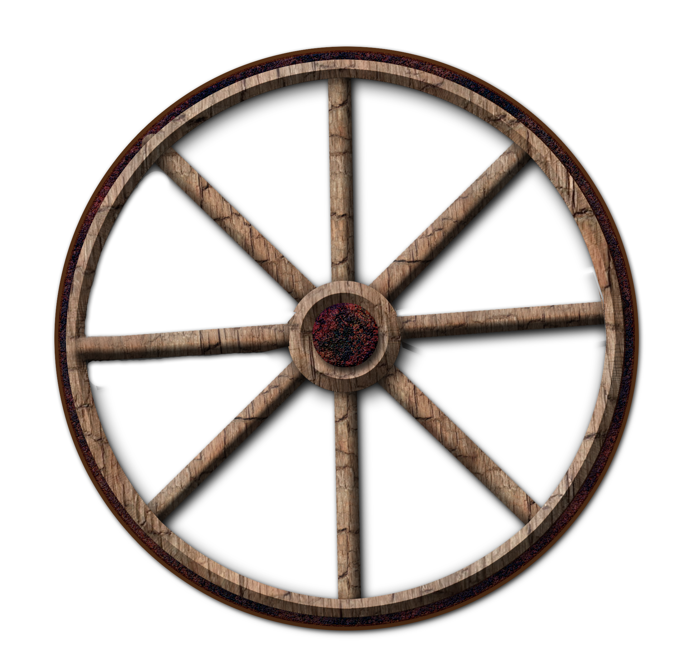

How It Works
The main function of the wheel is to allow an object to move efficiently across a surface, such as a horse-drawn cart, or roller blades. The wheel is attached to on axle in order for it to turn, which is critical for its function. Instead of having to slide, the wheel's turning reduces the friction by digging in to the ground and gives you more leverage over the load you are carrying, which makes pushing the load easier. The bigger the diameter of the wheel, the easier the work becomes. Instead of pushing against the friction of the ground, you only need to push against the friction of the wheels.
For more information on how the wheel works click here.